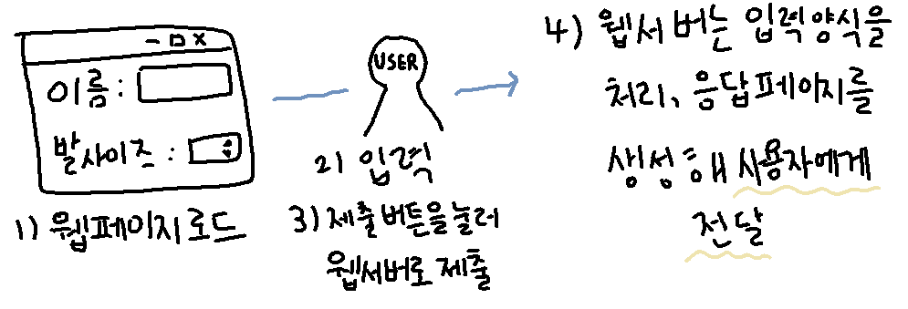

: 웹 페이지에서 사용자의 정보를 입력 받는 요소,
사용자가 입력한 내용을 서버로 보낼 때 사용

1. 작동 방식
1) 웹 브라우저가 입력 요소가 포함된 웹 페이지 로드
2) 사용자가 데이터 입력
3) 사용자가 제출(submit) 버튼을 눌러 입력 양식을 웹 서버로 제출
4) 웹 서버는 입력 양식을 처리, 응답 페이지를 생성해 사용자에게 전송
2. <form>
1) 웹 폼을 생성하는 태그,
사용자가 웹 사이트로 정보를 보낼 수 있는 입력 요소를 담는 컨테이너 역할
2) action : 폼 데이터를 처리할 웹 서버 응용 프로그램
3) method : 데이터를 보내는 방법 (*GET, *POST)
4) name : 폼의 이름 지정
*GET
웹 사이트에서 검색을 위한 방식, 글자수 최대 2048글자,
URL주소뒤에 물음표와 쿼리 문자열을 붙여 전달, 비밀보장 X
-> 사용 방법 <form>에 method="get" 속성 추가
*POST3. 폼 요소
사용자가 입력한 데이터를 URL 주소 뒤에 붙이지 X,
길이 제한 X, 보안 유지 가능, 입력 전송에 사용
-> 사용 방법 <form>에 method="post" 속성 추가